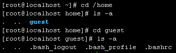
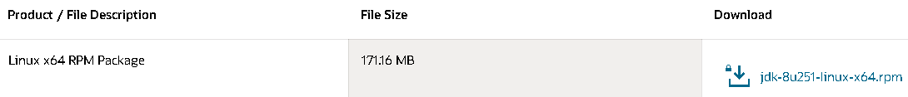

Linux学习笔记（下）
一、用户和用户组
Linux 是多用户多任务操作系统，换句话说，Linux 系统支持多个用户在同一时间内登陆，不同用户可以执行不同的任务，并且互不影响。
不同用户具有不同的权限，毎个用户在权限允许的范围内可以在同一时间完成不同的任务，Linux 正是通过这种权限的划分与管理，实现了多用户多任务的运行机制。用户组是具有相同特征用户的逻辑集合，可以把需要相同权限的用户放入一个组，那么，所有用户就具有了和组一样的权限，这就是用户组。
用户和组之间的关系如下图所示：

1、配置文件
1.1 用户配置文件
本节了解即可
/etc/passwd和/etc/shadow：这两个文件可以说是linux系统中最重要的文件之一。如果没有这两个文件或者这两个文件出问题，那就无法正常登录linux系统了。
使用cat /etc/passwd或vim /etc/passwd（推荐，有高亮显示）命令来查看文件
文件内容由:符号分割成7个字段，每个字段的含义：
- 用户名：即代表用户账号的字符串
- 该账号的口令（密码）：为什么是
x呢？早期的unix系统口令确实是存放在这里，但基于安全因素，后来就将其存放到/etc/shadow中了，在这里只用一个x代替。 - 用户标识号(uid)：系统识别用户身份就是通过这个数字来的，0就是root，取值范围是065535，1499由系统作为管理账号保留。
- 组标识号(gid)：这个字段对应
/etc/group中的一条记录 - 注释说明：该字段没有实际意义，相当于备注
- 用户目录：当用户登录时就处在这个目录下。root的目录是/root，普通用户的目录则为
/home相应的用户名文件夹，位置可以自定义。 - shell：用户登录后要启动一个进程，用来将用户下达的指令传给内核，这就是shell。Linux的shell有很多种，在CentOS中是bash
/etc/shadow文件：
这个文件和/etc/passwd类似，也用:分割成不同的字段，包括最后3个字段默认为空的共9个：
- 用户名：跟/etc/passwd对应
- 用户密码：这个才是该账号的真正的密码，不过这个密码已经加密过了，但是有些黑客还是能够解密的。所以为了安全，该文件属性设置为600（只允许root读写）。
- 上次更改密码的时间戳(单位：天)：这个数字是距离1970年1月1日到上次更改密码的天数计算而来
- 要过多少天才可以更改密码：默认是0，即不限制
- 密码多少天后到期：即在多少天内必须更改密码，超过设定值未更改将不能登录系统。默认是99999，相当于永远不需要改
- 密码到期前的警告期限：默认为7，表示当7天后密码会过期时，系统就发出警告提醒用户，他的密码将在7天后到期
- 账号失效期限：如果设置这个值为3，则表示：密码已经到期后，用户并没有在到期前修改密码，那么再过3天，则这个账号就失效了，即锁定了。
- 账号的有效期：和“上次更改密码的时间戳”一样，是按距离1970年1月1日多少天算的。它表示的含义是，账号在这个日期前可以使用，到期后账号作废。
- 最后一个字段作为保留用的，无实际意义
1.2 用户组配置文件
/etc/group此文件是记录组 ID（GID）和组名相对应的文件。前面讲过，/etc/passwd 文件中每行用户信息的第四个字段对应的 /etc/group 文件中的一条记录。用vim打开这个文件，发现也是用:分割为4个字段

各字段的含义：
-
用户组的名称：由字母或数字构成
-
组密码：和 /etc/passwd 文件一样，这里的
x仅仅是密码标识，真正加密后的组密码默认保存在 /etc/gshadow 文件中。不过，用户设置密码是为了验证用户的身份，那用户组设置密码是用来做什么的呢？用户组密码主要是用来指定组管理员的，由于系统中的账号可能会非常多，root 用户可能没有时间进行用户的组调整，这时可以给用户组指定组管理员，如果有用户需要加入或退出某用户组，可以由该组的组管理员替代 root 进行管理。但是这项功能目前很少使用，我们也很少设置组密码。如果需要赋予某用户调整某个用户组的权限，则可以使用 sudo 命令代替
-
组ID (gid)：就是用户组的 ID 号，Linux 系统就是通过 GID 来区分用户组的
-
组中的用户：此字段列出每个群组包含的所有用户。需要注意的是，如果该用户组是这个用户的初始组，则该用户不会写入这个字段，比如root组就没有写root用户。可以这么理解，该字段显示的用户都是这个用户组的附加用户
每个用户都可以加入多个附加组，但是只能属于一个初始组
/etc/gshadow文件同/etc/shadow文件，储存一些关于用户组的需要保护的信息，用vim打开，看到也是用:分割为4个字段，同时左下角提示这是只读的文件（图中已剪掉中间部分）
各字段含义：
-
组名：同 /etc/group 文件中的组名相对应
-
组密码：对于大多数用户来说，通常不设置组密码，因此该字段常为空，但有的为
!，指的是该群组没有组密码，也不设有群组管理员。 -
组管理员：从系统管理员的角度来说，该文件最大的功能就是创建群组管理员
那么，什么是群组管理员呢？
考虑到 Linux 系统中账号太多，而超级管理员 root 可能比较忙碌，因此当有用户想要加入某群组时，root 或许不能及时作出回应。这种情况下，如果有群组管理员，那么他就能将用户加入自己管理的群组中，也就免去麻烦 root 了。
不过，由于目前有 sudo 之类的工具，因此群组管理员的这个功能已经很少使用了。
-
组中的附加用户：该字段显示这个用户组中有哪些附加用户，和 /etc/group 文件中附加组显示内容相同。
2、用户管理
2.1 添加用户
使用useradd [选项] 用户名来添加用户，可用选项：
-c<备注>：加上备注文字。备注文字会保存在passwd的备注栏位中；
-d<登入目录>：指定用户登入时的启始目录；
-e<有效期限>：指定帐号的有效期限（格式为 “YYYY-MM-DD”）；
-f<缓冲天数>：指定在密码过期后多少天即关闭该帐号；
-g<群组>：指定用户所属的群组。一般以和用户名相同的组作为用户的初始组，在创建用户时会默认建立初始组。一旦手动指定，则系统将不会在创建此默认的初始组目录；
-G<群组>：指定用户所属的附加群组(把用户加入其他组，使用附加组)；
-m：自动建立用户的登入目录（该选项是默认的）；
-M：不要自动建立用户的登入目录；
-n：取消建立以用户名称为名的群组；
-r：建立系统帐号。也就是 UID 在 1~499 之间，供系统程序使用的用户。由于系统用户主要用于运行系统所需服务的权限配置，因此系统用户的创建默认不会创建主目录；
-s：指定用户登入后所使用的shell（默认是 /bin/bash）；
-u：指定用户id。
创建一个名为guest的用户，使用tail -n1查看配置文件最后一行的信息，发现写入了新建用户默认的数据。因为没有设置密码，所以密码字段是 !!，代表这个用户没有合理密码，不能正常登录。
切换到对应的用户目录，有一些默认的隐藏文件

2.2 修改用户密码&锁定用户
passwd [选项] 用户名用于设置用户的认证信息，包括用户密码、密码过期时间等。系统管理者root则能用它管理系统用户的密码。只有管理者可以指定用户名，一般用户只能变更自己的密码。
可用选项：
-d：删除密码，仅有系统管理者才能使用；
-f：强制执行；
-k：设置只有在密码过期失效后，才能更新；
-l：锁定密码，该选项会在 /etc/shadow 文件中指定用户的加密密码串前添加 “!”，使密码失效。仅 root 用户可用；
-u：解锁用户，和 -l 选项相对应，也是只能 root 用户使用；
-s：列出密码的相关信息，仅有系统管理者才能使用；
-u：解开已上锁的帐号。
-n天数：设置该用户修改密码后，多长时间不能再次修改密码，对应 /etc/shadow 文件中第4个字段；
-x天数：设置该用户的密码有效期，对应 /etc/shadow 文件中各行密码的第5个字段；
-w天数：设置用户密码过期前的警告天数，对于 /etc/shadow 文件中各行密码的第6个字段；
-i日期：设置用户密码失效日期，对应 /etc/shadow 文件中各行密码的第7个字段。
管理员模式下passwd命令附加用户名修改相应用户的密码，否则就是修改管理员的密码，如果密码长度小于8位或者过于简单，会出现提示
输入两次修改密码，这里和登录的时候一样，是不显示任何字符的，但是已经输入了（图中设置了系统语言为中文）
2.3 修改用户属性
修改用户属性有两种方式，一种是使用Vim编辑器手动修改涉及用户信息的相关文件（/etc/passwd、/etc/shadow、/etc/group、/etc/gshadow（后两个为用户组文件））另一个方法就是使用usermod 命令，需要注意的是，此命令不允许你改变正在线上的使用者帐号名称。
格式：
usermod [选项] 用户名
选项：
-c<备注>：修改用户帐号的备注文字；
-d<用户目录>：修改用户的主目录，使用绝对路径，对于不存在的目录，不会主动创建；
-e<有效期限>：修改帐号的有效期限；
-f<失效天数>：修改在密码过期后多少天即关闭该帐号；
-g<群组>：修改用户所属的群组；
-G<群组>；修改用户所属的附加群组；
-l<帐号名称>：修改用户帐号名称；
-L：锁定用户密码，即锁定用户；
-s：修改用户登入后所使用的shell；
-u：修改用户ID；
-U:解除密码锁定。
useradd 命令和 usermod 命令的区别：前者用于添加用户，同时可以对用户信息进行指定；后者针对与已存在的用户，使用该命令可以修改它们的信息
2.4 切换用户
su是最简单的用户切换命令，通过该命令可以实现任何身份的切换，包括从普通用户切换为 root 用户、从 root 用户切换为普通用户以及普通用户之间的切换。
普通用户之间切换以及普通用户切换至 root 用户，都需要知晓对方的密码，只有正确输入密码，才能实现切换；从 root 用户切换至其他用户，无需知晓对方密码，直接可切换成功。
可使用的选项：
-：当前用户不仅切换为指定用户的身份，同时所用的工作环境也切换为此用户的环境（包括 PATH 变量、MAIL 变量等），如果省略用户名，则默认切换为root用户。
-l：同上，也是在切换用户身份的同时，完整切换工作环境，但后面需要添加要切换的用户名。
-p或-m（–preserve-environment）：变更身份时，不要变更环境变量。
-c <指令> 或–command <指令>：仅切换用户执行完指定的指令后，即恢复原来的身份。
也就是说，不使用-选项的话，切换后的环境变量是之前用户的，相当于临时切换。
如图，新开一个会话窗口，登录guest用户，切换root用户，输入密码后用env | grep guest查看环境变量，发现用户名及相关环境变量还是guest，而不是root
2.5 删除用户
userdel命令用于删除指定的用户，以及与用户相关的文件。若不加选项，则仅删除用户帐号，而不删除相关文件
选项：
-f：强制删除用户，即使用户当前已登录；
-r：删除用户的同时，删除与用户相关的所有文件。
不要轻易使用-r选项；它会同时删除用户的所有文件和目录，如果用户目录下有重要的文件，在删除前记得备份
3、用户组管理
3.1 添加用户组
命令格式：groupadd [选项] 组名
选项：
- -g GID：指定组 ID；
- -r：创建系统群组。
3.2 修改用户组
命令格式：groupmod [选项] 组名
选项：
- -g GID：修改组 ID；
- -n 新组名：修改组名；
3.3 删除用户组
命令格式：groupdel 组名。
使用 groupdel 命令删除群组，其实就是删除 /etc/gourp 文件和 /etc/gshadow 文件中有关目标群组的数据信息。
不能使用 groupdel 命令随意删除群组：此命令仅适用于删除那些 “不是任何用户初始组” 的群组，换句话说，如果有群组还是某用户的初始群组，则无法使用 groupdel 命令成功删除
二、磁盘空间
df(disk free)命令用于显示已挂载磁盘的总容量、使用容量、剩余容量等，可以不加任何参数。默认显示单位为KB。
这样显示看着不太方便，可以使用-h选项自动选择合适的单位显示，如K、M、G（省略了B）
其它选项：
-a或–all：包含全部的文件系统；
–block-size=<区块大小>：以指定的区块大小来显示区块数目；
-h或–human-readable：以可读性较高的方式来显示信息；
-H或–si：与-h参数相同，但在计算时是以1000 Bytes为换算单位而非1024 Bytes；
-i或–inodes：显示inode的信息；
-k或–kilobytes：指定区块大小为1024字节；
-l或–local：仅显示本地端的文件系统；
-m或–megabytes：指定区块大小为1024*1024字节；
–no-sync：在取得磁盘使用信息前，不要执行sync指令，此为预设值；
-P或–portability：使用POSIX的输出格式；
–sync：在取得磁盘使用信息前，先执行sync指令；
-t<文件系统类型>或–type=<文件系统类型>：仅显示指定文件系统类型的磁盘信息；
-T或–print-type：显示文件系统的类型；
-x<文件系统类型>或–exclude-type=<文件系统类型>：不要显示指定文件系统类型的磁盘信息；
–help：显示帮助；
–version：显示版本信息。
du(Disk usage)也是查看使用空间的，但是与df命令不同的是du命令是对文件和目录磁盘使用空间的查看，不加选项时默认显示当前目录的使用空间情况。
选项：
-a或-all 显示目录中个别文件的大小。
-b或-bytes 显示目录或文件大小时，以byte为单位。
-c或–total 除了显示个别目录或文件的大小外，同时也显示所有目录或文件的总和。
-k或–kilobytes 以KB(1024bytes)为单位输出。
-m或–megabytes 以MB为单位输出。
-s或–summarize 仅显示总计，只列出最后加总的值。
-h或–human-readable 以K，M，G为单位，提高信息的可读性。
-x或–one-file-xystem 以一开始处理时的文件系统为准，若遇上其它不同的文件系统目录则略过。
-L<符号链接>或–dereference<符号链接> 显示选项中所指定符号链接的源文件大小。
-S或–separate-dirs 显示个别目录的大小时，并不含其子目录的大小。
-X<文件>或–exclude-from=<文件> 在<文件>指定目录或文件。
–exclude=<目录或文件> 略过指定的目录或文件。
-D或–dereference-args 显示指定符号链接的源文件大小。
-H或–si 与-h参数相同，但是K，M，G是以1000为换算单位。
-l或–count-links 重复计算硬件链接的文件。
示例：
三、进程管理
ps （Process Status，不是PhotoShop）命令是最常用的监控进程的命令，通过此命令可以查看系统中所有运行进程的详细信息。
由于ps命令能够支持的系统类型非常多，所以选项也很多。这里只列出了几个常用的选项：
a：显示一个终端的所有进程，除会话引线外；
u：显示进程的归属用户及内存的使用情况；
x：显示没有控制终端的进程；
-l：长格式显示更加详细的信息；
-e：显示所有进程；
ps 命令有些与众不同，它的部分选项可以不用加-符号，比如选项aux。
图中部分输出已省略，各列的含义分别是：
| 列名 | 含义 |
|---|---|
| USER | 该进程是由哪个用户产生的。 |
| PID | 进程的 ID。 |
| %CPU | 该进程占用 CPU 资源的百分比，占用的百分比越高，进程越耗费资源。 |
| %MEM | 该进程占用物理内存的百分比，占用的百分比越高，进程越耗费资源。 |
| VSZ | 该进程占用虚拟内存的大小，单位为 KB。 |
| RSS | 该进程占用实际物理内存的大小，单位为 KB。 |
| TTY | 该进程是在哪个终端运行的。其中，tty1 ~ tty7 代表本地控制台终端（可以通过 Alt+F1 ~ F7 快捷键切换不同的终端），tty1~tty6 是本地的字符界面终端，tty7 是图形终端。pts/0 ~ 255 代表虚拟终端，一般是远程连接的终端，第一个远程连接占用 pts/0，第二个远程连接占用 pts/1，依次増长。 |
| STAT | 进程状态。常见的状态有以下几种：-D：不可被唤醒的睡眠状态，通常用于 I/O 情况。-R：该进程正在运行。-S：该进程处于睡眠状态，可被唤醒。-T：停止状态，可能是在后台暂停或进程处于除错状态。-W：内存交互状态（从 2.6 内核开始无效）。-X：死掉的进程（应该不会出现）。-Z：僵尸进程。进程已经中止，但是部分程序还在内存当中。-<：高优先级（以下状态在 BSD 格式中出现）。-N：低优先级。-L：被锁入内存。-s：包含子进程。-l：多线程（小写 L）。-+：位于后台。 |
| START | 该进程的启动时间。 |
| TIME | 该进程占用 CPU 的运算时间，注意不是系统时间。 |
| COMMAND | 产生此进程的命令名。 |
pstree 命令是以树形结构显示程序和进程之间的关系，基本格式如下：
1 | pstree [选项] [PID或用户名] |
常用选项及含义：
-a：显示启动每个进程对应的完整指令，包括启动进程的路径、参数等。
-c：不使用精简法显示进程信息，即显示的进程中包含子进程和父进程。
-n：根据进程 PID 号来排序输出，默认是以程序名排序输出的。
-p：显示进程的 PID。
-u：显示进程对应的用户名称。
另外，centos7上默认没有安装psmisc包，无法使用pstree命令，安装命令： yum -y install psmisc
kill命令用来杀死进程。本质上，kill 命令的原理是向操作系统内核发送一个信号（多是终止信号）和目标进程的 PID，然后系统内核根据收到的信号类型，对指定进程进行相应的操作。
格式：kill [信号] PID
kill 命令只能识别 PID，而不能识别进程名。Linux 定义了几十种不同类型的信号，可以使用 kill -l 命令查看所有信号及其编号，以下是常用的信号及其含义（表中省略了信号名称的前缀 SIG）：
| 信号编号 | 信号名 | 含义 |
|---|---|---|
| 0 | EXIT | 程序退出时收到该信息。 |
| 1 | HUP | 挂掉电话线或终端连接的挂起信号，这个信号也会造成某些进程在没有终止的情况下重新初始化。 |
| 2 | INT | 表示结束进程，但并不是强制性的，常用的 “Ctrl+C” 组合键发出就是一个 kill -2 的信号。 |
| 3 | QUIT | 退出。 |
| 9 | KILL | 杀死进程，即强制结束进程。 |
| 11 | SEGV | 段错误。 |
| 15 | TERM | 正常结束进程，是 kill 命令的默认信号。 |
四、软件安装
Linux系统和Windows系统安装应用软件的方式是不同的，而且Linux系统的软件包的管理要比Windows系统软件包的管理复杂得多。同时因为Windows下所有的软件都不能在Linux中识别，所以 Windows 中大量的木马和病毒也都无法感染Linux。
CentOS安装软件的方式一般来说有三种：
- rpm包安装（Redhat Package Manager）
- 压缩包解压缩安装
- yum在线安装（Yellow dog Updater, Modified）
1、安装jdk8（rpm）
首先去oracle官网上下载jdk8的rpn包（提示需要注册账号，注册即可）

使用FTP将其上传到服务器。参考：Linux 云服务器搭建 FTP 服务
然后确认当前服务器没有java环境，并且rpm包已经上传完毕
执行rpm -ivh jdk-8u241-linux-x64.rpm命令开始安装，这里的参数含义：
- -i：安装（install）;
- -v：显示更详细的信息（verbose）;
- -h：打印 #，显示安装进度（hash）;
当两个进度条走完后，便安装完毕了，此时可以删除rpm包
在/usr/java目录下可以看到安装后的jdk文件
配置环境变量：使用命令vim /etc/profile打开并编辑环境变量文件，在末尾追加如下内容
1 | export JAVA_HOME=/usr/java/jdk1.8.0_241-amd64 |
最后执行source /etc/profile使修改的文件生效，然后java -version检查是否安装成功
2、安装tomcat（tar.gz压缩包）
从tomcat官网下载tar.gz格式的二进制分发包，然后使用FTP上传到服务器，检查文件是否存在，然后使用tar -zxvf 压缩包名命令解压
其中的选项说明：
- -z或–gzip或–ungzip：通过gzip指令处理备份文件
- -x或–extract或–get：从备份文件中还原文件
- -v：显示操作过程
- -f<备份文件>或–file=<备份文件>：指定备份文件
解压完成后，检查当前目录，进入tomcat的bin目录，Windows使用bat文件启动，Linux使用sh文件
运行此文件不能直接输入文件名，会被视为命令，此时使用./startup.sh（需要注意的是tomcat依赖java环境，此时）
当然，关闭的时候运行./shutdown.sh
附：tar命令详解：
tar命令可以为linux的文件和目录创建档案。利用tar，可以为某一特定文件创建档案（备份文件），也可以在档案中改变文件，或者向档案中加入新的文件。tar最初被用来在磁带上创建档案，现在，用户可以在任何设备上创建档案。利用tar命令，可以把一大堆的文件和目录全部打包成一个文件，这对于备份文件或将几个文件组合成为一个文件以便于网络传输是非常有用的。
首先要弄清两个概念：打包和压缩。打包是指将一大堆文件或目录变成一个总的文件；压缩则是将一个大的文件通过一些压缩算法变成一个小文件。
为什么要区分这两个概念呢？这源于Linux中很多压缩程序只能针对一个文件进行压缩，这样当你想要压缩一大堆文件时，你得先将这一大堆文件先打成一个包（tar命令），然后再用压缩程序进行压缩（gzip bzip2命令）。
3、安装vim（yum）
目前Linux厂商发布软件机制主要分为2大类
Dpkg:由 Debian Linux 社区开发，B2D,Ubantu 等 Linux 发行版使用就是这种机制
RPM:由 Red Hat 开发，CentOs,SuSe 使用就是这种机制
这两种机制安装软件会先检测前置软件是否存在，如果不存在则不安装.如软件 A 安装。需系统内含有软件 B，那么不存在则不会安装软件
为了解决这种因依赖问题而导致软件不能安装厂商又提供了在线升级机制，简单的说就是先将前驱软件都安装以保证要安的软件能正确安装Dpkg 机制对应的在线升级机制 APT
RPM 机制对应的在线升级机制 YUM
虚拟机安装的CentOS默认是没有vim的，下面将通过vim来演示yum的使用
安装命令：yum -y install 包名，-y表示安装过程中所有询问用户的操作都为 yes
卸载命令：yum remove 包名
使用 yum 卸载软件包时，会同时卸载所有与该包有依赖关系的其他软件包，即便有依赖包属于系统运行必备文件，也会被 yum 无情卸载，带来的直接后果就是使系统崩溃。
除非你能确定卸载此包以及它的所有依赖包不会对系统产生影响，否则不要使用 yum 卸载软件包。